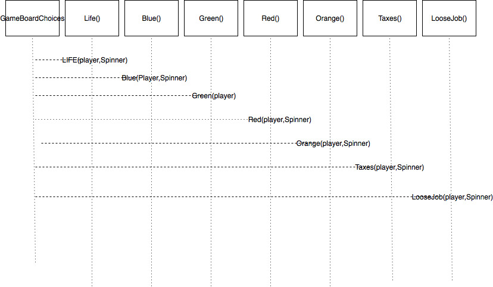
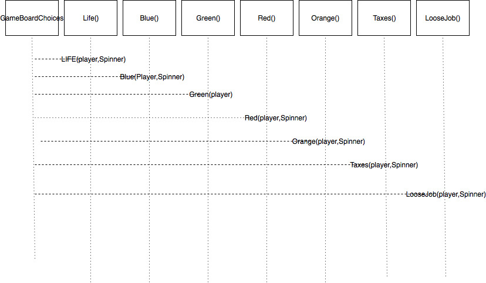

The class diagram is broken up into different segments. Player Class: This is where all of the Player information will be held throughout the game Player Order: This is where the player will be given a number to keep track of their order. This is also where the player objects will be sorted. The will be placed into a order method that will keep track of the order through out the game. Board Game: This will have a spinner method and will place the players onto the correct space based on their spin Game spaces: Based on where they land they will be given options to choose from

 

 "
"